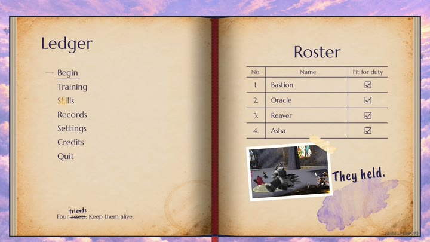

I miss playing with my friends and raiding. So I built this.
I built it because I miss playing with my friends. TERA shut down, everybody's busy and in different time zones now, and some raid buddies of mine have died, so I can never really play with them again. So I've built some AI party members to help me.

![Animated chart, How Project Trinity: Shatterbound gets built. AI agents do the work; I design it, play it and decide. I sit down with Fable and the sit-down fills the sheets. The orchestrator, Claude Opus, pulls one line at a time and sends it to a seat: VFX on Claude Opus, Backend on Codex, Tooling on Claude Sonnet. Each line becomes a pull request whose checks must pass, then two AI reviews by Gemini and Codex or Opus, a film check where every frame is opened, and my eye: I watch every look before it merges into develop. Counts at the foot: 1,238 pull requests merged since July, 662 sheet lines landed, 75 orchestrators so far.](img/how-the-work-runs-still.png)